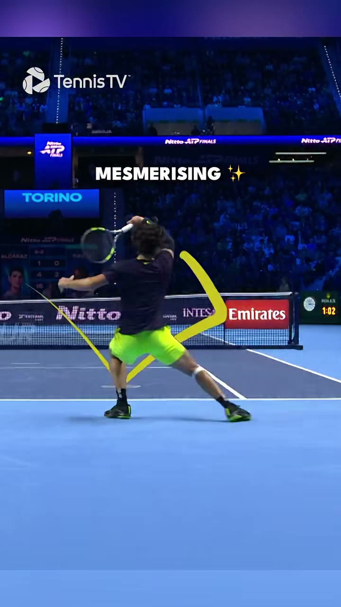

Xem reel tại đây — bản gốc và quay chậm
Tải về từ reel của Tennis TV: 720×1280, 25 fps, 11,4 giây. Một chuỗi cú thuận tay từ góc rộng của sân: vị trí phòng thủ, tư thế mở, duỗi thẳng hoàn toàn, quỹ đạo bóng của người phát sóng và đồ họa “164 KM/H”, sau đó là màn ăn mừng. Cả hai phiên bản đều chơi nội tuyến và có thể tải xuống.

7 điều rút ra — chỉ cú thuận tay
Chuẩn bị sớm, ngắn gọn - và tay trái đặt trên cổ họng
Mouratoglou: Alcaraz "bắt đầu động tác thuận tay từ rất sớm... trước khi bóng chạm đất. Sự chuẩn bị của anh ấy rất ngắn gọn và đơn giản." Konov bổ sung thêm chi tiết tạo ra độ xoắn: tay trái giữ trên cổ họng “cho đến khi anh ấy chạm tới hoặc thậm chí vượt qua đường vai phải của mình”, tạo thêm sức căng cho thân trước khi thả ra. [Tennis.com 2022; Đào tạo quần vợt hàng đầu]
Cách cầm vợt: bevel 4 — “western” là tranh cãi về nhãn, không phải cầm khác
Nguồn duy nhất đo bevel từ ảnh (TennisCraft) cho thấy cả khớp ngón trỏ gốc và đệm gót bàn tay đều ở bevel 4 - semi-western tiêu chuẩn/mạnh mẽ - và bác bỏ rõ ràng bevel 5. Các nhà bình luận nói “gần với tây” (Pat Cash) đang mô tả quan điểm semi-western mạnh mẽ tương tự; GripSnake lưu ý rằng nó có thể trôi sâu hơn trên đất sét. Bảng tranh chấp đầy đủ dưới đây. [TennisCraft 2022; GripSnake 2025; Tennishead 2025]
Vợt lùi dẫn bằng khuỷu, đầu vợt hướng xuống sân, rồi trễ sâu vào lag
Konov: anh ấy “dẫn dắt cú đánh ngược bằng khuỷu tay của mình,” đầu vợt hướng xuống sân, mông hướng về phía hàng rào phía sau - một vị trí được xây dựng để chuyển sang trạng thái tụt hậu. Tennisresor (trích dẫn Quần vợt có khả năng chịu lỗi) lưu ý rằng anh ấy “để vợt rơi rất sâu - thấp hơn đáng kể, chẳng hạn như Djokovic,” và chỉ đến đúng giờ vì bắt đầu sớm. Mouratoglou: “cổ tay của anh ấy thả lỏng và thả lỏng” trước khi chạm bóng, “điều này giúp anh ấy đi vào dưới bóng và tạo ra độ xoáy điên cuồng”. [Đào tạo quần vợt hàng đầu; Giải quần vợt 2025; Quần vợt.com]
Tay thẳng, chạm bóng xa trước — ngoại lệ so với kiểu cầm vợt thường gặp
Mouratoglou: anh ấy “duỗi thẳng cánh tay phải của mình rất lâu trước khi đánh và giữ nó duỗi thẳng cho đến khi kết thúc chuyển động.” Điều đó quan trọng bởi vì tài liệu nói chung (Reid 2013) cho biết những người chơi theo lối chơi phương Tây thường chạm bóng với hơn uốn cong khuỷu tay (~100° so với ~130° đối với phía đông). Cánh tay thẳng với kiểu cầm vợt mạnh semi-western là ngoại lệ, không phải quy luật - và các huấn luyện viên rõ ràng làm như vậy không đưa ra nó như lời khuyên của câu lạc bộ. [Tennis.com 2022; Reid và cộng sự. 2013]
Chuỗi bắn muộn và theo thứ tự - nhưng những con số đó đều là những con số ưu tú
Landlinger và cộng sự. đo trình tự từ đầu gần đến đầu xa hông → vai → khuỷu tay → cổ tay → đầu vợt, với đỉnh xoay xương chậu ưu tú 75 ms trước khi chạm bóng, thân 57 mili giây trước đó, và xoay trong vai đạt đỉnh 24 mili giây sau ; khoảng cách hông–vai lớn nhất trung bình −27°. Không có thước đo tương đương nào của Alcaraz tồn tại - tay trái dài của anh ấy là một chất lượng là yếu tố tăng xoắn chất lượng, không phải X-factor được đo. [Landlinger và cộng sự. 2010]
Các con số thực sự có của anh: nặng hơn trung bình tour cả tốc độ LẪN spin
ATP/TDI theo dõi, mùa 2024: thuận tay topspin trung bình 78 dặm/giờ và 3.208 vòng/phút so với trung bình tour 75 mph và 2.708 rpm; Chất lượng cú thuận tay 8.62, chỉ sau 8,80 của Sinner. Spin trung bình theo mặt sân trong ba năm: 3.177 vòng/phút cứng ngoài trời, 3.056 đất sét, 3.055 cứng trong nhà. Đây là số liệu theo dõi chính, được kiểm chứng trong quá trình nghiên cứu này. [Thông tin chi tiết về ATP 2024; ATP vượt xa những con số]
Cú kết thúc mặc định là wiper — lasso là công cụ, không phải đặc sản
Tennisresor (trích dẫn playtennis.sg): anh ấy “thường kết thúc với vợt xung quanh hoặc ngay dưới độ cao vai ở phía bên trái… một cú dứt điểm 'wiper' cổ điển"; Lasso/buggy-roi xuất hiện theo tình huống - phòng thủ, muộn, xoáy lên nặng. Đồ họa xã hội liệt kê anh ấy hoàn toàn trong “THE LASSO” mâu thuẫn với phân tích chi tiết hơn. [Tennisresor 2025; Dominating Tennis]
Không có tốc độ thuận tay tối đa đã xác minh của Alcaraz
Đã xuất bản xung đột xác nhận quyền sở hữu “tối đa” — 102, 106, 109 và 111 dặm/giờ - và không có phương pháp theo dõi chính nào. “164 KM/H” (≈102 mph) của cuộn phim là hình ảnh đài phát thanh bên trong bản chỉnh sửa. Trình bày bất kỳ điều nào trong số này dưới dạng mức tối đa được đo lường của anh ấy và bạn đang lặp lại một tuyên bố không có nguồn gốc. Danh sách đầy đủ trong Không thể xác minh. [ TRÒ CHƠI; AP; Đồ họa Tennis TV]
Một cú thuận tay, tám pha
Các giai đoạn tuân theo trình tự mà các phân tích đã xuất bản mô tả - theo thứ tự nét vẽ, không phải theo dòng thời gian theo từng khung hình của clip này (bản chỉnh sửa 11 giây không thể cung cấp một giai đoạn). Nhấn vào một giai đoạn để biết nội dung các nguồn nói và gợi ý đáng để lấy cắp.
| Pha | Những gì các nguồn mô tả | (cấp độ bằng chứng) |
|---|---|---|
| Cầm vợt | Mạnh mẽ theo phong cách semi-western: đốt ngón trỏ và đệm gót bàn tay ở bevel 4 (phân tích ảnh); “gần tây” trong bình luận; có thể trôi sâu hơn trên đất sét. | Phân tích bevel từ ảnh · ý kiến khác nhau |
| Xoay thân & chuẩn bị | Bắt đầu trước khi bóng nảy; ngắn gọn và đơn giản; tay trái giữ trên cổ vợt tới hoặc qua đường vai phải để tăng xoắn. | Sự đồng thuận trong huấn luyện (không đo góc độ/thời gian) |
| Quay lại | Dẫn đầu bằng khuỷu tay; đầu vợt hướng xuống sân, đầu vợt chạm hàng rào phía sau; lưỡi dao ~45°; tụt sâu hơn Djokovic, đúng giờ vì xuất phát sớm. | Phân tích huấn luyện (tổng hợp thứ cấp) |
| Trễ vợt (lag) | Vợt lật từ đầu sân xuống đến độ trễ; cổ tay lỏng lẻo và rơi xuống trước khi chạm bóng. Độ duỗi cổ tay ưu tú đạt cực đại ở 88,7° ~55 mili giây trước khi chạm bóng — dữ liệu chung. | Đồng thuận huấn luyện · được đồng nghiệp đánh giá (chung) |
| Chuỗi động học | Từ gần đến xa: hông → vai → khuỷu tay → cổ tay → vợt. Sự tách biệt tinh hoa ~27°; đỉnh xương chậu/thân ở −75/−57 ms; đỉnh xoay của vai sau khi chạm bóng. | Được đánh giá ngang hàng (tinh hoa nói chung, không phải Alcaraz) |
| Chạm bóng | Cánh tay duỗi thẳng trước khi chạm bóng và tiếp tục duỗi thẳng; chạm bóng xa ở phía trước, thường tăng lên; Chiều cao chạm bóng tại cuộc biểu tình Madrid 2023 là 1,08 m (tất cả các lần chạm đất). | Đồng thuận huấn luyện · Theo dõi ATP (một phần) |
| Hoàn thành | Kết thúc kiểu windshield-wiper quanh hoặc hơi dưới vai đối bên là mặc định; lasso/buggy-whip chỉ trong tình huống phòng thủ, muộn hoặc bóng spin nặng. | Phân tích huấn luyện (một mẫu có dấu vết quấn đến cổ) |
| Thuận tay bật lên | Quan sát rời mặt sân trên cú thuận tay rộng; độ nâng là kết quả tích lũy của đẩy chân + xoay thân, không phải cú nhảy có chủ đích. | Được quan sát một cách định tính · Cơ chế chuyên môn chung |
Lưu ý từ vựng: “pat the dog” (thả dây xuống) so với thả “trên mép” là không giải quyết cho Alcaraz — tuyên bố chính thức chỉ xuất hiện trong chuỗi diễn đàn Talk Tennis, đây là bằng chứng ở cấp độ diễn đàn. Các nguồn có uy tín mô tả cú thả sâu bằng khuỷu tay dẫn đầu từ đầu xuống sân mà không giải quyết được câu hỏi về dây, vì vậy trang này cũng không.
Cách cầm vợt: một phép đo bevel, nhiều nhãn gọi
Hỏi năm nguồn xem Alcaraz sử dụng cách cầm nắm nào và bạn nhận được “semi-western”, “semi-western mạnh mẽ”, “semi-western sang tây” và “khá gần với tây”. Chỉ một trong số họ thực sự đo được bất cứ điều gì. Sự bất đồng nằm ở cách diễn đạt; vị trí đặt tay mà bằng chứng ủng hộ là như nhau.
| Nguồn | Khẳng định | cơ sở |
|---|---|---|
| TennisCraft, “Cách cầm vợt thuận tay của Alcaraz, minh họa” (2022) | Semi-western chuẩn — khớp ngón trỏ gốc ở bevel 4, đệm gót bàn tay ở bevel 4; đây không phải bước sang Bevel 5 | Đường viền bevel từ ảnh — Andalucia Open 2021 (giữa cú đánh), Australian Open 2022 (kết thúc cú đánh) |
| GripSnake (2025) | “Mạnh semi-western ở bevel 4” (cả hai cột mốc); “đôi khi thậm chí có thể trôi dạt về phía tây hoàn toàn bằng đất sét, nhưng bevel 4 vẫn là mỏ neo” | Khẳng định trên trang bán dụng cụ luyện cầm vợt; không có phép đo từ ảnh |
| Dominating Tennis tổng hợp (cập nhật 2026) | "Cách cầm vợt của anh ấy đang bị tranh cãi: Yandell đặt nó giữa Federer và Nadal, một nhà phân tích gọi nó là phương Tây, các blog huấn luyện nói là bán phương Tây. Chúng tôi nói là semi-western sang phương tây." | Thuộc tính phụ - nguồn chính Yandell không được định vị hoặc xác minh trong nghiên cứu này |
| Pat Cash trên BBC, qua Tennishead (2025) | “Bình thường khá gần với kiểu Tây”; trên sân cỏ, anh ấy đứng trong một kiểu cầm và chặn kiểu lục địa - cách cầm thay đổi theo bề mặt và cú đánh | Ấn tượng trực tiếp của bình luận viên; không đo bevel |
| Mouratoglou, qua ESPN (2023) | Alcaraz và Nadal chia sẻ về “cách cầm, khả năng thu bóng, cách họ sử dụng chân, khả năng tăng tốc vợt khi tiếp bóng và đường vợt của họ” | So sánh của HLV; không nêu bevel cụ thể |
Các con số thực sự tồn tại cho cú thuận tay của anh
Không có phòng thí nghiệm cơ sinh học nào công bố về Alcaraz. Những gì tồn tại là theo dõi giải đấu - ATP / Đổi mới dữ liệu quần vợt (TDI) / TennisViz thông qua Infosys - và nó thực sự là chính: được đo từ trận đấu, không phải ước tính. Ba số liệu tiêu đề bên dưới đã được xác minh trực tiếp trên trang web của ATP trong quá trình nghiên cứu này.
Tốc độ thuận tay topspin trung bình, mùa 2024 — tốc độ trung bình của chuyến đi là 75 mph (“3 mph”). Thông tin chi tiết về ATP (TDI), 2024-09-13. Đã xác minh trực tiếp.
Spin thuận tay trung bình, mùa 2024 - tốc độ trung bình của chuyến tham quan là 2.708 vòng / phút. Bản phát hành ATP Insights tương tự. Đã xác minh trực tiếp. Trung bình một trận đạt 3.316 vòng/phút so với Ruud (QF Bắc Kinh 2023).
Chất lượng cú thuận tay, 2024 — thứ 2 tour (Sinner 8,80; Djokovic 8,54). Chỉ số tổng hợp TDI/TennisViz của tốc độ, spin, độ sâu, độ rộng và tác động lên đối thủ. Đã xác minh trực tiếp.
| Số liệu | Giá trị | Bối cảnh | Nguồn |
|---|---|---|---|
| Spin thuận tay theo mặt sân (3 năm tới 10/2024) | 3.177 / 3.056 / 3.055 vòng/phút | Cứng ngoài trời / đất sét / cứng trong nhà - 3 trong số 6 vị trí hàng đầu trong bộ dữ liệu Top-10, chỉ được chia sẻ với Ruud | ATP vượt xa những con số, 30-10-2024 |
| Spin trung bình trong một trận | 3.316 vòng/phút | vs Ruud, Beijing 2023 QF (Ruud trung bình 3.175 vòng/phút trong cùng một trận đấu) | ATP vượt xa những con số, 30-10-2024 |
| Độ cao bóng vượt lưới, thuận tay trên đất nện | 0,87 m | Đứng thứ 2 trong Top 10 người dẫn đầu, sau Ruud 0,89 m | ATP vượt xa những con số, 30-10-2024 |
| Madrid 2023 (6 trận) — tốc độ FH trung bình | 116 km/giờ | Đối thủ đạt tốc độ trung bình 120 km/h — anh ấy đã giành chức vô địch khi đánh chậm hơn trung bình hơn sân anh ấy đánh bại | ATP vượt xa những con số, 26-04-2024 |
| Madrid 2023 — tỷ lệ cú thuận tay | 54% | 524 trong 967 cú đánh dưới là thuận tay | ATP vượt xa những con số, 26-04-2024 |
| Madrid 2023 — độ cao chạm bóng trong rally | 1,08 m | so với 1,22 m của đối thủ — tất cả cú đánh dưới trong rally, không riêng thuận tay; phù hợp với việc lấy bóng sớm hơn/trên đường đi lên | ATP vượt xa những con số, 26-04-2024 |
| Queen's 2023 | 73 mph · SQ 8,5 | FH = 58% số cú đánh dưới (379), 82% trong — chỉ đoạn tìm kiếm, chưa mở toàn bộ trang; coi như thứ yếu | ATP Beyond The Numbers, tháng 6 năm 2024 |
Săn cú thuận tay: inside-out và cú thứ ba
TennisMajors (2024), trích đồ họa TennisViz/TDI: thuận tay inside-out những cơ hội vs Sinner – Trung Quốc mở rộng 2023: Sinner 19, Alcaraz 10; Indian Wells 2024: Alcaraz 16, Sinner 10. Đồ họa cơ bản là hình ảnh; số lượng được báo cáo trong văn bản. Riêng biệt, Dominating Tennis trích dẫn Simon Rea (Tennis Australia) qua The Age: Alcaraz sử dụng cú thuận tay làm cú đánh thứ ba của mình 79% trong năm 2023 (Djokovic 64%, Sinner 69%) — bài gốc không mở được, nên đây vẫn là trích dẫn thứ cấp. Không có tỷ lệ dùng inside-out cả mùa nào được xác minh.
Người thắng và sai: chỉ một giải đấu
ACE Tennis Magazine (09-04-2026, nguồn không nêu tên): hơn 7 trận đấu ở Melbourne — 129 cú thuận tay ăn điểm (75% số cú ăn điểm dưới), 256 lỗi thuận tay (53% lỗi cú đánh dưới), thuận tay = 56% cú trong rally, trung bình 78 mph. Chỉ dùng khi ghi rõ nguồn này. Trang chính thức Roland-Garros (qua đoạn trích tìm kiếm) ghi 65 cú thuận tay ăn điểm qua 4 trận năm 2023. Tổng cả mùa theo cánh từ nguồn chính: không tìm thấy.
Một cú thuận tay cấp tour đo trong phòng thí nghiệm như thế nào
Đây là những con số tham khảo cho cơ học được mô tả ở trên - từ Landlinger et al. (2010, ghi chuyển động Vicon 400 Hz) và Reid, Elliott nói chung. Việc gắn bất kỳ ai trong số họ với Alcaraz sẽ là bịa đặt; trang này không bao giờ làm.
Chuỗi động học, đoạn một
Vận tốc tuyến tính cực đại tuân theo một trật tự nghiêm ngặt từ gần đến xa - hông → vai → khuỷu tay → cổ tay → đầu vợt. Nhấn vào một đoạn để biết mức đỉnh đo được của đoạn đó và thời điểm đoạn đó phát sáng so với tác động. Tất cả các giá trị: Landlinger et al. 2010, nhóm ưu tú.
Vận tốc xoay đỉnh — thuận tay đỉnh cao (Landlinger et al. 2010)
Trung bình: chậu 540,5 ± 40,5 °/s, thân 745,0 ± 82,1 °/s, xoay trong vai 793,7 ± 83,0 °/s (đạt đỉnh 24 ms sau đó tác động - các tác giả lưu ý rằng giá trị này phụ thuộc vào mô hình), độ giãn khuỷu tay 277,5 ± 95,9 °/s. Dấu hiệu ưu tú là thời gian, không chỉ là kích thước: xương chậu và đỉnh thân ưu tú đã xuất hiện sau đó (−75 ms / −57 ms) so với đàn em có hiệu suất cao' (−93 ms / −75 ms).
| Biến | Chuẩn đỉnh cao | Nguồn |
|---|---|---|
| Tốc độ đầu vợt, ngang | 33,1 ± 2,4 m/s | Landlinger 2010 (chéo sân 34,4, dọc sân 31,7); cầu thủ câu lạc bộ đo được 21–24 m/s (Reid 2013) |
| Tốc độ đầu vợt, theo chiều dọc | 18,7 ± 2,6 m/s | Landlinger 2010 |
| Hông–vai, khoảng cách lớn nhất | −27.0 ± 8.9° | Landlinger 2010 (ngang −28,7°, DL −25,4°); phạm vi chuẩn bị 20–30° theo Takahashi 1996 qua Reid 2013 |
| Căn chỉnh ở cuối cú backswing | Hông ~90° · Vai ~110° | Reid 2013 — xoay từ cuối sân trong cú thuận tay đã hoàn thiện |
| Duỗi cổ tay (thước đo lag), lớn nhất | 88.7 ± 10.2° | Landlinger 2010 — đỉnh ~55 ms trước chạm bóng; “cổ tay ổn định” theo HLV ≈ 90° giữa cẳng tay và vợt (Feel Tennis) |
| Đường vợt lúc chạm bóng | ~20° / ~40° / ~70° | Bằng / topspin / topspin lob, trên ngang — Reid 2013 (Takahashi 1996) |
| Đóng góp vào tốc độ vợt khi chạm bóng | 35% · 25% · 25% · 10% | Xoay trong cánh tay trên ~35%, gập ngang cánh tay trên ~25%, bàn tay (gập gan bàn tay/cổ tay) ~25%, tốc độ vai về trước ~10% — tổng hợp Reid 2013 |
| Góc khuỷu lúc chạm bóng, theo cách cầm | ~130° eastern · ~100° western | Reid 2013 (Elliott 1989/1997) — kiểu gãy tay thẳng của Alcaraz |
| Độ cao chạm bóng theo cách cầm (sân cứng) | −4 cm · ≥ 6 cm | Eastern ~4 cm dưới hông; semi-western/western ≥6 cm trên hông — Reid 2013 |
| Thời lượng vung về phía trước | ~0,32 giây | Landlinger 2010 (0,324 ± 0,086 giây) |
Tư thế cởi mở là mặc định của chuyến tham quan - lực nâng là vật lý chứ không phải kỹ năng trình diễn
Lập trường: không tồn tại phần trăm Alcaraz
Không có nguồn uy tín nào công bố sự phân chia mở, bán mở và trung lập của Alcaraz. Các blog huấn luyện mô tả anh ấy một cách định tính - mở/bán mở trên những quả bóng nhanh hơn và rộng hơn, tải vào chân phải. Bối cảnh chung: một video phân tích 2.479 tư thế từ 20 chuyên gia cho thấy thế mở ở 83,6% cú thuận tay (65,4% trong tình huống thuận lợi) — ở đây chỉ biết qua đoạn trích tìm kiếm ResearchGate, nên xem là trích dẫn thứ cấp. Nghiên cứu điển hình Federer của Reid (2013): mở 77% (đất nện) / 72% (cỏ). Knudson & Bahamonde thấy không có tác dụng lập trường đáng kể về tốc độ vợt khi chạm bóng trong phòng thí nghiệm - thế đứng trong các trận đấu được chọn dưới áp lực thời gian, không phải để tăng thêm tốc độ đã được chứng minh.
Dù: một hệ quả, không phải một kỹ thuật
Không có nghiên cứu hoặc phép đo nào về không khí dành riêng cho Alcaraz được tìm thấy - anh ấy quan sát bật lên khỏi mặt đất (Chuỗi theo dõi của Dominating Tennis kết thúc với cảnh anh ta bay trên không, vợt quấn quanh cổ) và được mô tả là sử dụng “những cú đá chân cực mạnh (đôi khi nhảy khi đánh)” (Tennisresor). Cơ chế phòng thủ đến từ Robson (2014), với John Yandell và giám đốc y tế ATP Todd Ellenbecker, về Nadal/Murray: rời sân là không phải là cố ý nhảy — “lực quay tích lũy ở phần thân dưới của anh ta đưa anh ta lên không trung”; Việc tách vai-hông tối ưu hóa lực của thân và lực tiếp đất giúp phục hồi ngay lập tức. Đóng khung nó theo cách đó - không bao giờ là một bước nhảy để sao chép.
Huấn luyện trình tự - không phải cánh tay thẳng
Nguồn huấn luyện uy tín hội tụ về đào tạo sự liên tiếp Alcaraz sử dụng, đồng thời giữ lại rõ ràng hai đặc điểm dễ thấy nhất của mình. Mouratoglou, thông qua Dominating Tennis: "Bắt đầu sớm và giữ nó ngắn gọn... Phần đó có thể sao chép được. Việc thả cổ tay và cánh tay thẳng không được đưa ra như lời khuyên của câu lạc bộ." Liều lượng được công bố theo từng nguồn.
Những gì không nên sao chép từ Alcaraz
- Đừng cố ép lag cổ tay.Mercier: “Đừng bao giờ ép cổ tay bị trễ bằng tay - độ trễ là kết quả của việc kéo tay về phía trước bằng hông/thân mình trong khi vẫn giữ cho cổ tay được thư giãn; buộc nó làm hỏng thời gian và có nguy cơ bị viêm gân cổ tay.”
- Đừng sao chép cánh tay thẳng làm mục tiêu.Nó đòi hỏi phải căn thời gian chính xác trên một điểm chạm bóng cố định và đó là ngoại lệ ngay cả với những cách cầm chuyên nghiệp. Cánh tay uốn cong đôi hoặc gần như thẳng sẽ phù hợp nếu chạm bóng ở phía trước (TorqAI).
- Đừng cố tạo tay thẳng với cầm western cực đoan.HLV Adri: hãy kỳ vọng khuỷu cong hơn và điểm chạm gần hơn — hình học của cách cầm quyết định, không phải ý chí.
- Đừng úp mặt vợt xuống lúc chạm bóng để “tạo” topspin.HLV Adri: Nhận bóng bằng mặt phẳng, sau đó gạt bóng sau khi chạm bóng. Xoáy đến từ đường đi chứ không phải từ việc đưa mặt vào bóng.
- Đừng nhảy cho cú thuận tay bật lên.Thang máy được tích lũy lực truyền động bằng chân và chuyển động quay rời khỏi mặt đất (Robson/Yandell/Ellenbecker). Một cú nhảy có chủ ý sẽ tiêu tốn sự cân bằng, sức mạnh và khả năng phục hồi.
- Đừng đổi cách cầm vợt tùy tiện.TorqAI: đổi grip mất vài tuần và cần HLV hướng dẫn. Bevel 4 hợp với Alcaraz; đó không phải công thức cho bàn tay bạn.
Những khung hình hiển thị điều gì - và điều mà bản chỉnh sửa 11 giây không thể chứng minh được
Ba khung hình từ quá trình trích xuất 2 khung hình/giây, khớp với những gì các phân tích đã công bố mô tả. Đây là những quan sát từ ghi chú khung - góc rộng duy nhất của cuộn và chỉnh sửa có nghĩa là không có gì ở đây là phép đo.



Những khung hình hiển thị những gì
- Một chuỗi thuận tay: vị trí phòng thủ rộng, nạp thế mở, xoay toàn thân
- Xoay thân với tay trái trên cổ vợt, đầu vợt hướng lên
- Cú kết thúc quấn quanh vai đối bên
- Bảng chỉ dẫn Vòng chung kết Turin / Nitto ATP; băng ở đầu gối trái
- Đồ họa riêng của bản chỉnh sửa: “MESMERISING” và “164 KM/H”
Những gì họ không thể hiển thị
- Cách cầm vợt — không đọc được bevel ở khoảng cách và độ phân giải này
- Điểm chạm bóng hoặc độ cao chạm bóng chính xác
- Bất kỳ phép đo cú xoay nào - không có góc, tốc độ hoặc thời gian được xác minh khung
- Liệu cú đánh này có phải là điển hình hay không - một khoảnh khắc tập hợp trong phần đánh dấu đã được chỉnh sửa
- “164 KM/H” là thước đo — nó là hình ảnh do đài truyền hình chỉnh sửa
Lưu ý xếp hàng cho trang Cơ sở kiến thức quần vợt: Cú thuận tay của Alcaraz đã được giới thiệu trong bài đăng so sánh Alcaraz-vs-Sinner ngày 26 tháng 11 năm 2026, vì vậy, một bài đăng mới trên Facebook về cú đánh của người chơi này sẽ lặp lại sự kết hợp trong khoảng thời gian 60 ngày của bản tóm tắt thương hiệu. Trang nghiên cứu này tự đứng vững; gắn cờ trước khi lên lịch bất kỳ bài đăng nào từ nó.
Không thể xác minh
Đã tìm kiếm nhưng không tìm thấy hoặc chỉ tìm thấy ở dạng không có nguồn gốc hoặc xung đột. Những thứ này vẫn mở - không có gì trên trang này phụ thuộc vào chúng.
- Không có phép đo cơ sinh học cụ thể nào của Alcaraz tồn tại trong các nguồn được tìm thấy - không có hệ số X/góc tách chuyển động, vận tốc góc hông/thân, góc trễ, tốc độ đầu vợt, lực phản lực mặt đất hoặc tải trọng khớp đối với Alcaraz. Mỗi số Landlinger/Reid trên trang này đều được gắn nhãn ưu tú chung vì lý do này.
- Cách cầm vợt chỉ dựa trên một phân tích ảnh (TennisCraft, 2022, hai ảnh). Không tìm thấy phép đo cách cầm bằng dụng cụ hoặc được nhóm xác nhận và cách diễn đạt “tây so với semi-western” trong bài bình luận vẫn chưa được giải quyết ngoài bằng chứng ảnh bevel 4. Vị trí được quy cho Yandell (“giữa Federer và Nadal”) không thể được xác minh trong nguồn chính của Yandell.
- Không có tốc độ hay spin thuận tay tối đa đã xác minh của Alcaraz. Xung đột cực đại được công bố — 102 mph (AP, ATP Finals vs Tiafoe), 106 mph (ESPN, trận chung kết Queen's 2023), 109 mph (các báo cáo khác về cùng trận đấu Tiafoe), 111 mph (Hình ảnh xã hội Tennis TV vs Ruud) — không có phương pháp chính nào đằng sau bất kỳ phương pháp nào trong số đó. Cuộc thi đấu trung bình trên 3.300 rpm có được ghi nhận; đỉnh spin cho một cú riêng lẻ thì không.
- Không có phân phối lập trường Alcaraz (mở so với bán mở so với trung tính %) và không có tỷ lệ dùng inside-out/inside-in cả mùa từ nguồn chính — chỉ có số cơ hội inside-out trong hai trận với Sinner (đồ họa TennisMajors/TDI) và một con số thứ cấp 79% cho cú thứ ba.
- Kiểu thả backswing (trên mép so với pat-the-dog) cho Alcaraz chỉ được khẳng định ở cấp độ diễn đàn. Các nguồn có uy tín mô tả cú thả sâu từ đầu xuống sân bằng khuỷu tay mà không giải quyết được câu hỏi về dây xuống/cạnh.
- Tần suất và cơ chế thuận tay bật lên của Alcaraz - được quan sát một cách định tính; không có số liệu, độ cao nhảy hoặc dữ liệu tải trọng khi hạ cánh.
- Tổng số người thắng/lỗi trong mùa giải theo cánh - chỉ báo cáo phụ về một giải đấu (ACE, Melbourne; đoạn Roland-Garros). Dữ liệu Dự án biểu đồ trận đấu được một nguồn tham chiếu cho một thời điểm trận đấu nhưng không được trích xuất trong nghiên cứu này.
- Cập nhật theo dõi 2025–2026: tập dữ liệu chính mạnh nhất là mùa TDI 2024 cộng với thời gian phân chia bề mặt ba năm cho đến tháng 10 năm 2024. Đồ họa trận đấu “Tennis Insights” trên mạng xã hội sau này (xếp hạng một trận đấu và số liệu về vòng/phút) là cho mỗi trận đấu, dựa trên hình ảnh và không thể xác minh độc lập dưới dạng văn bản; Không tìm thấy bảng xếp hạng thuận tay ATP/TDI chính của mùa giải hiện tại.
- Khoảng cách điểm chạm trước cơ thể (cm) của Alcaraz - chỉ được mô tả một cách định tính (“xa về phía trước”, “mở rộng sang một bên”). Ngay cả các mục tiêu huấn luyện ở cấp câu lạc bộ cũng không đồng tình với nhau (6–12 ở so với 12–18 ở phía trước hông dẫn đầu).
Mọi thứ được trích dẫn, có liên kết
Nghiên cứu được đọc vào ngày 28 tháng 11 năm 2026. Trước tiên, công việc theo dõi chính và được đồng nghiệp đánh giá, sau đó là các phân tích huấn luyện về Alcaraz, sau đó là các nguồn thông tin về cầu thủ câu lạc bộ.
Theo dõi chính & đã bình duyệt
- ATP Tour — “Cách Alcaraz 'đẩy đối thủ đến giới hạn'” (TDI Insights), 13-09-2024 — atptour.com (đã xác minh trực tiếp)
- ATP Tour, O'Shannessy — “Cú thuận tay sát thương của Dimitrov đứng đầu bảng xếp hạng” (Infosys Beyond The Numbers), 2024-10-30 — atptour.com
- ATP Tour, O'Shannessy — “Hãy đứng lên! Công thức chiến thắng Madrid của Alcaraz,” 26-04-2024 — atptour.com
- ATP Tour — Alcaraz Queen's, Infosys Beyond The Numbers, tháng 6 năm 2024 (chỉ đoạn trích) — atptour.com
- Landlinger và cộng sự. (2010), J Sports Sci Med 9:643–651 — PMC3761808
- Reid, Elliott PMC3761830
Huấn luyện / trung cấp uy tín - Kỹ thuật Alcaraz
- Tennis.com — “Thứ Tư vũ khí: Tại sao cú thuận tay mạnh mẽ của Carlos Alcaraz bắt đầu bằng đôi chân của anh ấy” (Mouratoglou), 2022-07-27 — quần vợt.com
- ESPN, Roenigk – “Trận đấu bên trong nhà vô địch US Open Carlos Alcaraz” (2023) – đặc biệt.ph
- TennisCraft — “Cầm thuận tay Alcaraz, được minh họa,” 24-03-2022 — tenniscraft.nyc
- GripSnake - “Chúng ta có thể học được gì từ cách cầm thuận tay của Alcaraz và Sinner?” 2025-07-13 — gripsnake.com
- Tennishead - Bài bình luận của Pat Cash BBC về cách cầm vợt của Alcaraz (2025) - tennishead.net
- Huấn luyện quần vợt hàng đầu / Simon Konov — Phân tích lực thuận tay của Alcaraz (mô tả video) — hằn học (gương)
- Dominating Tennis — “Cú thuận tay của Carlos Alcaraz, theo từng khung hình,” được cập nhật 25-09-2026 — thống trịtennis.com
- Tennisresor — “Cơ chế sinh học thuận tay hiện đại: Từ cú vung vợt của Nadal đến cú roi của Alcaraz,” 2025-08-19 — tennisresor.net
- Douglas Robson — “Airborne” (sự cố Yandell/Ellenbecker), 2014 — douglasrobson.com
- TennisMajors — “Sinner v Alcaraz: Trận chiến then chốt,” 2024-06-06 — tennismajors.com
- ACE Tennis Magazine — “Chiến thắng, phong cách Alcaraz,” 2026-04-09 — acetennismag.com
- Reel nguồn — Tennis TV, Facebook — facebook.com/reel/1143704481917163
Bài tập cho người chơi câu lạc bộ
- Michael Mercier (USPTA Master Professional) — “Chuỗi động học thuận tay hiện đại” — michael-mercier-tennis.netlify.app
- TorqAI — “Cách cải thiện cú thuận tay trong quần vợt của bạn,” được cập nhật vào tháng 8 năm 2026 — torqai.org
- Tennisnerd — “Làm chủ cú thuận tay của bạn: Hướng dẫn đầy đủ của huấn luyện viên Adri,” 14-06-2025 — tennisnerd.net
- Feel Tennis — “Cú thả thuận tay hiện đại cảm thấytennis.net
← Trước đó | Trang Thuận tay | Tiếp theo →